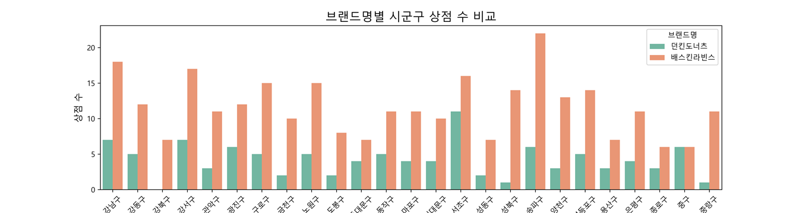
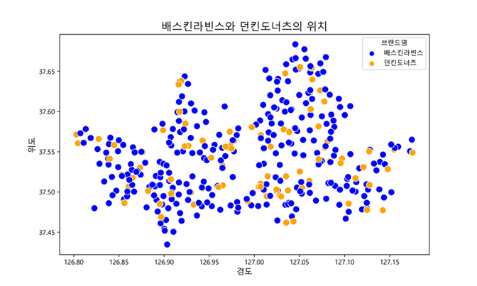

'상가정보_서울_202403.csv' 파일의 데이터를 분석하려고 합니다. 다음 조건에 따라 파이썬 코드를 생성해주세요.
# 제목
서울에 위치한 '배스킨라빈스'와 '던킨도너츠' 상권 분석
#조건
1. '상가정보_서울_202403.csv' 파일을 읽음
2. 전체 행과 열의 개수를 확인함
3. 5개의 행을 보여줌
import pandas as pd
# 1. '상가정보_서울_202403.csv' 파일을 읽음
file_path = '상가정보_서울_202403.csv' # 파일 경로 지정
df = pd.read_csv(file_path, encoding='utf-8')
# 2. 전체 행과 열의 개수를 확인함
print("전체 데이터의 행과 열 개수:")
print(df.shape)
# 3. 데이터의 처음 5개의 행을 보여줌
print("\n처음 5개의 행:")
print(df.head())
import pandas as pd
import platform
from matplotlib import font_manager, rc
import matplotlib.pyplot as plt
# 한글 폰트 설정 함수
def set_korean_font():
if platform.system() == 'Darwin': # MacOS
rc('font', family='AppleGothic')
elif platform.system() == 'Windows': # Windows
font_path = "c:/Windows/Fonts/malgun.ttf" # '맑은 고딕' 폰트 경로
font_name = font_manager.FontProperties(fname=font_path).get_name()
rc('font', family=font_name)
else:
print("해당 시스템에서는 한글 폰트 설정을 지원하지 않습니다.")
# 마이너스 기호 깨짐 방지
plt.rcParams['axes.unicode_minus'] = False
# 한글 폰트 설정 적용
set_korean_font()
import pandas as pd
import seaborn as sns
import matplotlib.pyplot as plt
# 1. '상가정보_서울_202403.csv' 파일 읽기
file_path = '상가정보_서울_202403.csv'
df = pd.read_csv(file_path, encoding='utf-8')
# 2. '브랜드명'별 빈도수 계산
brand_counts = df['브랜드명'].value_counts()
# 6-4. 배스킨라빈스와 던킨도너츠 색상 지정
# '브랜드명'에 따른 색상을 설정하기 위해 조건에 따른 색상 리스트 생성
colors = ['#1f77b4' if brand == '배스킨라빈스' else
'#ff7f0e' if brand == '던킨도너츠' else '#d3d3d3'
for brand in brand_counts.index]
# 6-3. '브랜드명'별 빈도수를 나타내는 막대그래프 생성
plt.figure(figsize=(12, 8))
sns.barplot(x=brand_counts.index, y=brand_counts.values, palette=colors)
plt.title('브랜드명별 빈도수 (특정 브랜드 색상)', fontsize=16)
plt.xlabel('브랜드명', fontsize=12)
plt.ylabel('빈도수', fontsize=12)
plt.xticks(rotation=0) # x축 레이블을 가로로 표현
plt.show()
7. 막대 그래프 작성하기
7-1 : seaborn 라이브러리 사용해 차트 생성
7-2 : 차트의 크기를 가로 15, 세로 4로 설정
7-3 : 브랜드명별로 시군구에 있는 상점 수를 비교하는 막대 그래프 생성
7-4 : 각 브랜드를 서로 다른 색으로 표시
7-5 : 범례에 브랜드명을 추가하여 색상과 브랜드의 관계를 명확히 표시
7-6 : X축에 시군구명을, Y축에 상점 수를 표시
7-7 : 차트를 png 파일로 저장

import pandas as pd
import seaborn as sns
import matplotlib.pyplot as plt
# 1. '상가정보_서울_202403.csv' 파일 읽기
file_path = '상가정보_서울_202403.csv'
df = pd.read_csv(file_path, encoding='utf-8')
# 2. 시군구와 브랜드명별 상점 수 계산
store_counts = df.groupby(['시군구명', '브랜드명']).size().reset_index(name='상점 수')
# 3. 차트 크기 설정 (가로 15, 세로 4)
plt.figure(figsize=(15, 4))
# 4. 브랜드명을 색상으로 구분한 막대 그래프 생성 (브랜드명별로 시군구 상점 수 비교)
g = sns.barplot(data=store_counts, x='시군구명', y='상점 수', hue='브랜드명', palette='Set2')
# 5. X축과 Y축 라벨 지정 (시군구명, 상점 수)
g.set_xlabel('시군구명', fontsize=12)
g.set_ylabel('상점 수', fontsize=12)
# 6. 범례 추가 (브랜드명에 따른 색상)
plt.legend(title='브랜드명', loc='upper right')
# 7. X축 레이블 가독성을 위해 45도 회전
plt.xticks(rotation=45)
# 그래프 제목 추가
plt.title('브랜드명별 시군구 상점 수 비교', fontsize=16)
# 8. 차트를 PNG 파일로 저장
plt.savefig('brand_store_comparison.png', dpi=300)
# 그래프 출력
plt.show()
8. 산점도 차트 작성하기
8-1 : seaborn 라이브러리 사용해 차트 생성
8-2 : 배스킨라빈스와 던킨도너츠의 위치를 경도와 위도로 산점도 그래프에 표시
8-3 : 배스킨라빈스와 던킨도너츠를 서로 다른 색으로 구분
8-4 : 각 브랜드가 어떤 색으로 표시되는지 범례에 추가
8-5 : X축에 경도, Y축에 위도 표시

import pandas as pd
import seaborn as sns
import matplotlib.pyplot as plt
# 1. '상가정보_서울_202403.csv' 파일 읽기
file_path = '상가정보_서울_202403.csv'
df = pd.read_csv(file_path, encoding='utf-8')
# 2. 배스킨라빈스와 던킨도너츠만 필터링
df_filtered = df[df['브랜드명'].isin(['배스킨라빈스', '던킨도너츠'])]
# 3. 차트 크기 설정
plt.figure(figsize=(10, 6))
# 4. 배스킨라빈스와 던킨도너츠의 위치를 경도와 위도로 산점도 그래프에 표시
sns.scatterplot(data=df_filtered, x='경도', y='위도', hue='브랜드명',
palette={'배스킨라빈스': 'blue', '던킨도너츠': 'orange'}, s=100)
# 5. X축과 Y축 라벨 설정
plt.xlabel('경도', fontsize=12)
plt.ylabel('위도', fontsize=12)
# 6. 범례 추가 (브랜드명에 따른 색상)
plt.legend(title='브랜드명', loc='upper right')
# 7. 그래프 제목 추가
plt.title('배스킨라빈스와 던킨도너츠의 위치', fontsize=16)
# 8. 차트를 PNG 파일로 저장
plt.savefig('baskin_dunkin_locations.png', dpi=300)
# 그래프 출력
plt.show()
9. 서울 지역의 배스킨라빈스와 던킨도너츠 위치를 지도에 마커로 표시하기
9-1 : folium 라이브러리 사용
9-2 : 서울 지역의 배스킨라빈스와 던킨도너츠의 위치를 지도에 마커로 표시
9-3 : 배스킨라빈스는 파란색, 던킨도너츠는 빨간색 마커 사용
9-4 : 팝업/툴팁: 마커에 상호명과 도로명주소 표시
9-5 : 차트를 png 파일로 저장
import pandas as pd
import folium
# 1. '상가정보_서울_202403.csv' 파일 읽기
file_path = '상가정보_서울_202403.csv'
df = pd.read_csv(file_path, encoding='utf-8')
# 2. 배스킨라빈스와 던킨도너츠만 필터링
df_filtered = df[df['브랜드명'].isin(['배스킨라빈스', '던킨도너츠'])]
# 3. 서울 지도 생성 (중심 좌표를 서울로 설정)
seoul_map = folium.Map(location=[37.5665, 126.9780], zoom_start=11)
# 4. 배스킨라빈스와 던킨도너츠의 위치를 지도에 마커로 표시
for idx, row in df_filtered.iterrows():
# 마커 색상 및 팝업 설정
if row['브랜드명'] == '배스킨라빈스':
color = 'blue'
else:
color = 'red'
# 팝업과 툴팁에 상호명과 도로명주소 표시
popup_text = f"{row['상호명']} {row['도로명주소']}"
tooltip_text = f"{row['상호명']}"
# 지도에 마커 추가
folium.Marker(
location=[row['위도'], row['경도']],
popup=folium.Popup(popup_text, max_width=300),
tooltip=tooltip_text,
icon=folium.Icon(color=color)
).add_to(seoul_map)
# 5. 지도를 HTML 파일로 저장
seoul_map.save('baskin_dunkin_seoul_map.html')
# folium에서 png로 바로 저장은 어렵지만, HTML을 통해 브라우저로 확인 가능
10. 위의 map에 MarkerCluster를 적용해주세요
import pandas as pd
import folium
from folium.plugins import MarkerCluster
# 1. '상가정보_서울_202403.csv' 파일 읽기
file_path = '상가정보_서울_202403.csv'
df = pd.read_csv(file_path, encoding='utf-8')
# 2. 배스킨라빈스와 던킨도너츠만 필터링
df_filtered = df[df['브랜드명'].isin(['배스킨라빈스', '던킨도너츠'])]
# 3. 서울 지도 생성 (중심 좌표를 서울로 설정)
seoul_map = folium.Map(location=[37.5665, 126.9780], zoom_start=11)
# 4. MarkerCluster 생성
marker_cluster = MarkerCluster().add_to(seoul_map)
# 5. 배스킨라빈스와 던킨도너츠의 위치를 지도에 마커로 표시
for idx, row in df_filtered.iterrows():
# 마커 색상 및 팝업 설정
if row['브랜드명'] == '배스킨라빈스':
color = 'blue'
else:
color = 'red'
# 팝업과 툴팁에 상호명과 도로명주소 표시
popup_text = f"{row['상호명']} {row['도로명주소']}"
tooltip_text = f"{row['상호명']}"
# MarkerCluster에 마커 추가
folium.Marker(
location=[row['위도'], row['경도']],
popup=folium.Popup(popup_text, max_width=300),
tooltip=tooltip_text,
icon=folium.Icon(color=color)
).add_to(marker_cluster)
# 6. 지도를 HTML 파일로 저장
seoul_map.save('baskin_dunkin_seoul_map.html')
# folium에서 png로 바로 저장은 어렵지만, HTML을 통해 브라우저로 확인 가능
'상가정보_서울_202403.csv' 파일의 데이터를 분석하려고 합니다. 다음 조건에 따라 파이썬 코드를 생성해주세요.
# 제목
서울에 위치한 '배스킨라빈스'와 '던킨도너츠' 상권 분석
#조건
1. '상가정보_서울_202403.csv' 파일을 읽음
2. 전체 행과 열의 개수를 확인함
3. 5개의 행을 보여줌
4. '브랜드명'별 빈도수를 구함
5. '브랜드명'별 빈도수의 비율을 구함
6. seaborn 사용해 차트 작성하기
6-1 : 차트에서 사용할 한글폰트 지정하기.
6-2 : x축 레이블 가로로 표현하기
6-3 : '브랜드명'별 빈도수를 나타내는 막대그래프 생성하기
6-4 : 배스킨라빈스는 파란색, 던킨도너츠는 오랜지색으로 나타내기
7. 막대 그래프 작성하기
7-1 : seaborn 라이브러리 사용해 차트 생성
7-2 : 차트의 크기를 가로 15, 세로 4로 설정
7-3 : 브랜드명별로 시군구에 있는 상점 수를 비교하는 막대 그래프 생성
7-4 : 각 브랜드를 서로 다른 색으로 표시
7-5 : 범례에 브랜드명을 추가하여 색상과 브랜드의 관계를 명확히 표시
7-6 : X축에 시군구명을, Y축에 상점 수를 표시
7-7 : 차트를 png 파일로 저장
8. 산점도 차트 작성하기
8-1 : seaborn 라이브러리 사용해 차트 생성
8-2 : 배스킨라빈스와 던킨도너츠의 위치를 경도와 위도로 산점도 그래프에 표시
8-3 : 배스킨라빈스와 던킨도너츠를 서로 다른 색으로 구분
8-4 : 각 브랜드가 어떤 색으로 표시되는지 범례에 추가
8-5 : X축에 경도, Y축에 위도 표시
8-6 : 차트를 png 파일로 저장
9. 서울 지역의 배스킨라빈스와 던킨도너츠 위치를 지도에 마커로 표시하기
9-1 : folium 라이브러리 사용
9-2 : 서울 지역의 배스킨라빈스와 던킨도너츠의 위치를 지도에 마커로 표시
9-3 : 배스킨라빈스는 파란색, 던킨도너츠는 빨간색 마커 사용
9-4 : 팝업/툴팁: 마커에 상호명과 도로명주소 표시
9-5 : 차트를 png 파일로 저장
10. 위의 map에 MarkerCluster를 적용해주세요